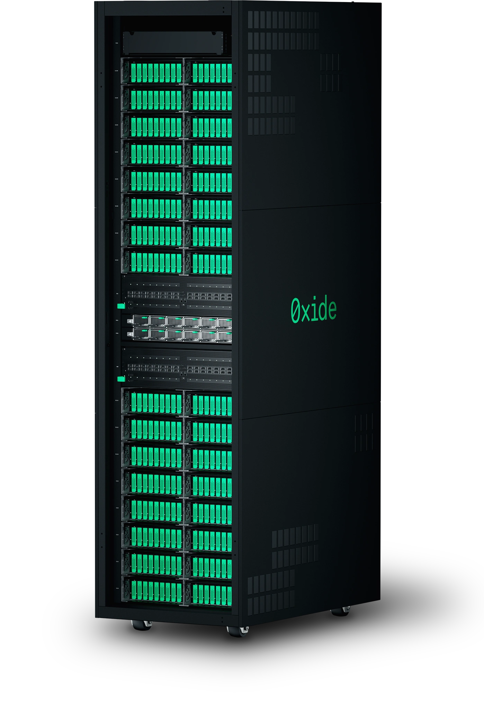
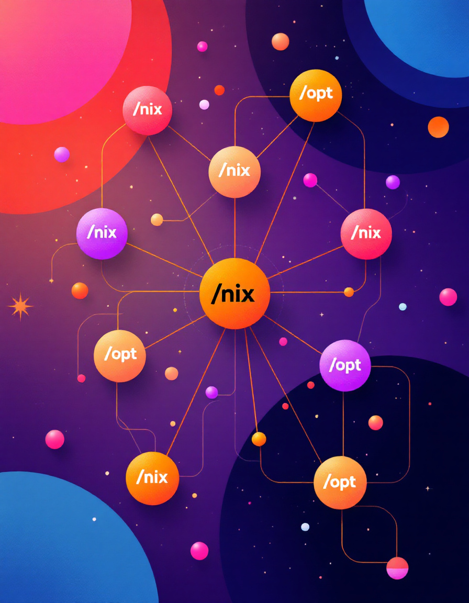

Ask questions!
- If something isn’t clear. Interrupt me.
- If you have any question. Interrupt me.
- No really… interrupt me, otherwise I will just keep talking.

Beyond the Default Store
Tom Bereknyei
(tomberek)
An abstraction defined in the Nix manual as:
The Nix store is an abstraction to store immutable file system data (such as software packages) that can have dependencies on other such data.
There are multiple types of Nix stores with different capabilities, such as the default one on the local filesystem (
/nix/store) or binary caches.
/nix/store./nix.
//nix/nix used for something else.nix build to get a bootstrap./result/bin/nix build to get a “native nix for the new
store”Gets annoying pretty fast…
Works… but, it still has a few issues…
~/.cache/nix issues.
nix-collect-garbage can be a bit of a pain.We can rebuild Nix with meson options and some patching to use the exact store you want. But that takes lots of rebuilding effort.
We can use lots of runtime options.
Let’s explore a few of those options.
Set all the relevant paths to the custom prefix.
See https://nix.dev/manual/nix/2.25/store/types/local-store#settings.

Thank you, 0xide https://oxide.computer/
$ time nix build
1:28:20 elapsed 327%CPU
$ export NIX_STORE=/opt/store
$ nix copy --store $PWD/opt-root --to $PWD/lambda-root <some-package>
$ zip --symlinks -r function.zip $PWD/opt-root/*/opt -> /var/task/opt, or/var/task/store$ export NIX_STORE=/opt/store
$ export NIX_CONFIG=...
$ nix copy --to $PWD/lambda-root nixpkgs#hello
$ ln -st $PWD/lambda-root $(
nix build --print-out-paths --no-link nixpkgs#hello
)/{bin,lib,etc,include,share,doc}
$ cat Dockerfile
FROM scratch
COPY ./lambda-root/opt /
CMD ["/bin/hello"]Just build, push, and run.
Be careful, some of the ~/.cache and
/nix/var things don’t know which store they belong to.
Helpful to set these options to isolate them into their own
directory.
export ROOT=$PWD/root
export NIX_USER_CONF_FILES=$ROOT
export NIX_CONF_DIR=$ROOT
export NIX_CACHE_HOME=$ROOT(Added in Nix 2.25.)
Question: should caches be associated with a specific store, by default? Currently XDG + user based.
# (formated for clarity)
export ROOT=$PWD/root
export NIX_USER_CONF_FILES=$ROOT
export NIX_CONF_DIR=$ROOT
export NIX_CACHE_HOME=$ROOT
export NIX_CONFIG="
experimental-features = nix-command flakes
store = local?
root = $ROOT &
real = $ROOT/opt/store &
state = $ROOT/opt/var/nix &
log = $ROOT/opt/var/log/nix &
store = /opt/store
substituters =
builders =
"
nix build --file ~/nixpkgs hello
One store for software, another for data. This is fully reproducible, but can be a way to separate concerns and take some of the versioning into your own hands. “Nix/data Nix/nix
Nixclassic provides baseline software that Nixopt can use without invalidation. It works. Is it useful?
/opt/store
/nix/store
compatibleConda builds software in a similar way to nix:
/home/anaconda1anaconda2anaconda3,
thenShould we explore this?